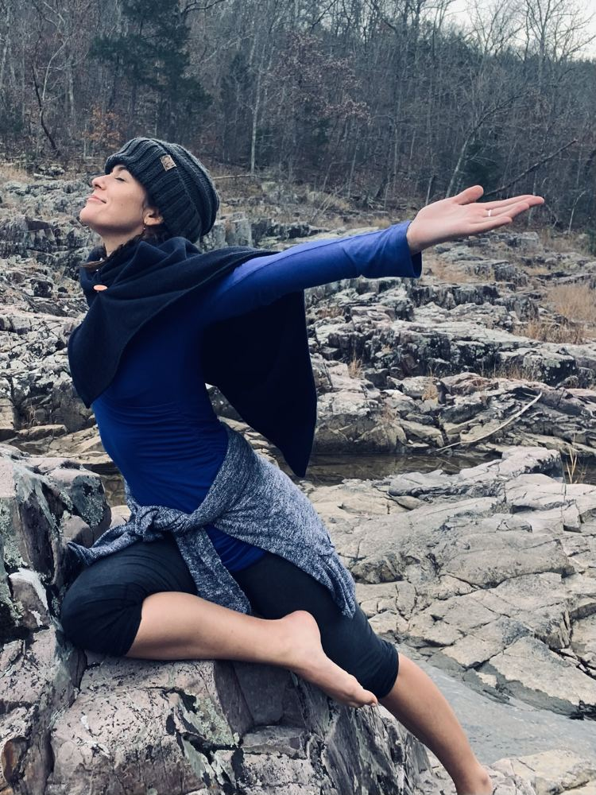
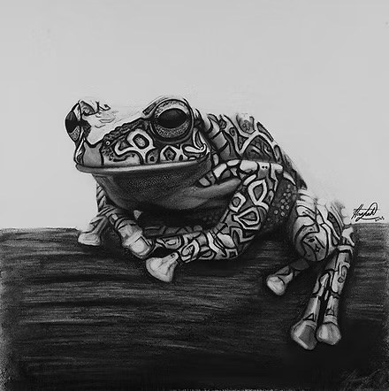
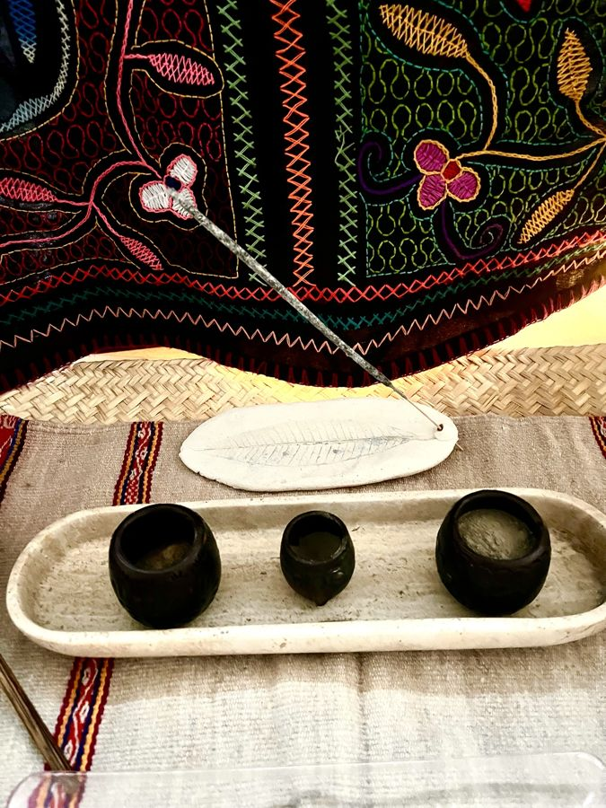
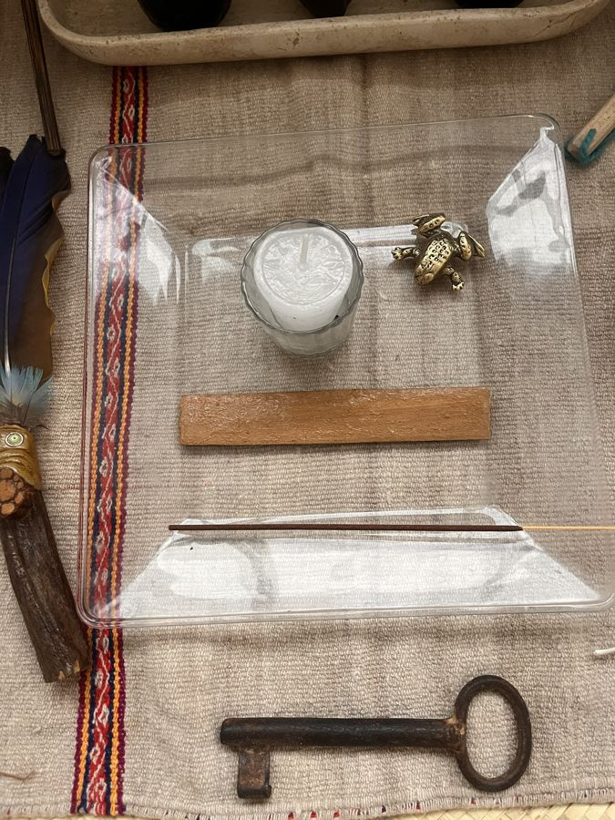
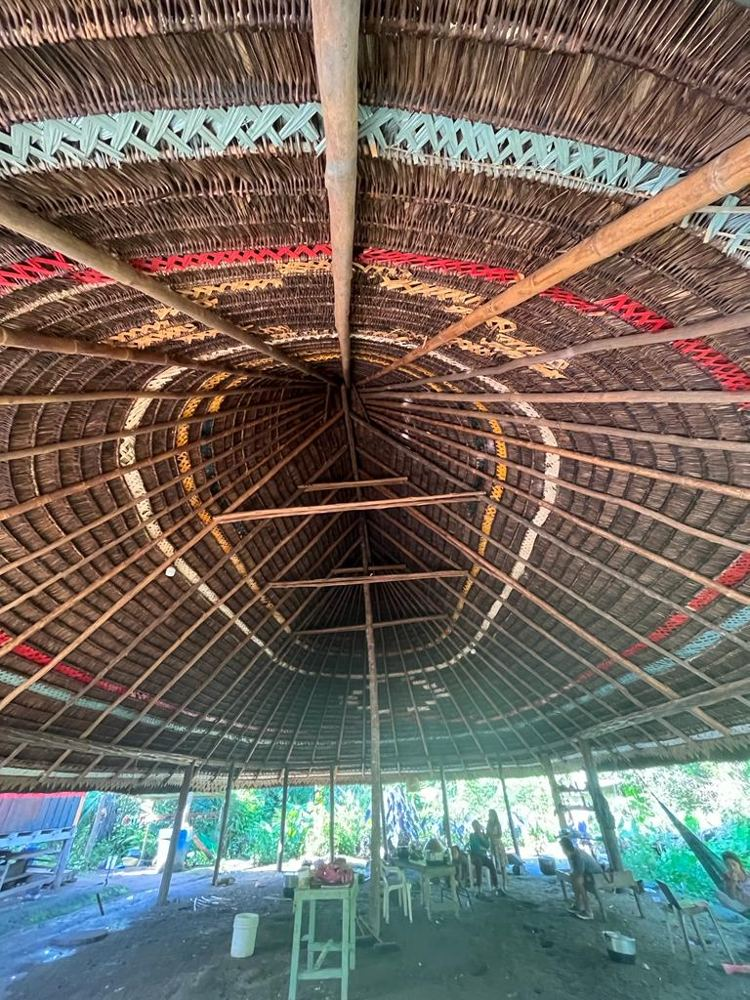

Servicios
Acompañamiento somático y ceremonias de medicina ancestral en Oaxaca
Un espacio para la reconexión, el recuerdo y la transformación intencional.
A través del acompañamiento somático y las ceremonias de medicina ancestral, ofrezco espacios cuidadosamente sostenidos para que bajes el ritmo, profundices tu conexión contigo y explores tu relación con el cuerpo, el espíritu y el mundo natural.
Mi trabajo se basa en la presencia, el respeto por las medicinas tradicionales y el compromiso de acercarme al camino de cada persona con cuidado, humildad y discernimiento. Creo que el trabajo significativo comienza con la confianza, una intención clara y la disposición de escuchar lo que se va desplegando, sin forzar un resultado.
Ya sea que te atraiga el acompañamiento somático, una ceremonia individual o una experiencia compartida con tu pareja, cada propuesta comienza con una llamada exploratoria gratuita de 30 minutos. Es una oportunidad para conectar, explorar tus intenciones y determinar si el trabajo se siente alineado con tus necesidades y circunstancias.
Las ceremonias son privadas, para personas o parejas, y se pueden acordar algunos encuentros grupales en Oaxaca, México.
Somático
Sanación y acompañamiento somático
El trabajo somático ofrece un espacio suave, centrado en el cuerpo, para bajar el ritmo, reconectar contigo y desarrollar una conciencia más profunda de lo que sucede dentro de ti.
Mi enfoque se apoya en prácticas somáticas y en una comprensión del sistema nervioso, incluida la teoría polivagal. El nervio vago conecta el cerebro con el corazón, los pulmones y el sistema digestivo, y tiene un papel importante en la forma en que pasamos entre estados de alerta, conexión y descanso.
A través del contacto suave, la atención y pausas intencionales, creamos espacio para escuchar al cuerpo sin forzar un resultado. Algunas personas experimentan calma, liberación emocional o una mayor conexión consigo mismas. La experiencia de cada persona es distinta, y no hay ningún resultado particular que debas lograr.
Qué esperar
Comenzamos con una conversación sobre cómo llegas y en qué te gustaría recibir apoyo. Cualquier contacto se conversa y se acuerda de antemano. Tienes el control durante toda la sesión y puedes cambiar de opinión, pausar o detenerte en cualquier momento.
Las sesiones somáticas se ofrecen como un trabajo de apoyo, centrado en el cuerpo. No sustituyen la atención médica ni la psicoterapia, y no diagnostico ni trato condiciones médicas o de salud mental.
Por favor comparte tu historial de salud relevante, tu tratamiento actual y cualquier experiencia previa con el contacto que me ayude a entender cómo apoyarte mejor.
- Formato: Solo sesiones individuales
- Duración: Aproximadamente 2 horas
- Contribución: $1,500 MXN
- Anticipo: $300 MXN

Ceremonial
Ceremonias de Kambo
El Kambo, también conocido como sapo, es una medicina tradicional amazónica que se obtiene de la secreción de la rana mono gigante (Phyllomedusa bicolor). Los pueblos indígenas de la Amazonía la han llevado a través de generaciones, y ocupa un lugar importante en varias tradiciones ancestrales.
Mi acercamiento al Kambo se basa en el respeto por la medicina, por sus raíces culturales y por la responsabilidad de sentarse con ella. El Kambo es una medicina de prueba: su intensidad física pide preparación, honestidad y disposición para recibir la experiencia con cuidado.
Raíces tradicionales
La rana Phyllomedusa bicolor vive en la selva amazónica, y su medicina ha sido cuidada durante generaciones por pueblos indígenas, en particular pueblos de lengua pano como los Matsés, los Huni Kuin y los Yawanawá. Cada pueblo tiene sus propias tradiciones, relatos y maneras de relacionarse con la medicina. Yo no pertenezco a estas comunidades, y comparto este breve panorama con respeto por sus linajes culturales distintos.
- Matsés: Los Matsés viven en la región del río Javari, en la Amazonía de Perú y Brasil. Tradicionalmente, los cazadores han usado el Kambo para afinar los sentidos y prepararse para la cacería.
- Huni Kuin: Los Huni Kuin viven en Acre, Brasil. Dentro de sus tradiciones, el Kambo se ha asociado con la fuerza, la buena fortuna en la cacería y la liberación de un peso del cuerpo y del espíritu conocido como panema.
- Yawanawá: Los Yawanawá de Acre, Brasil, también son conocidos por su relación tradicional con el Kambo. Sus líderes han hablado de la importancia de respetar la medicina y la forma en que se comparte fuera de sus comunidades.
Estas tradiciones pertenecen a pueblos y contextos culturales específicos, y no deben tratarse como intercambiables. A medida que el Kambo se ha extendido más allá de la Amazonía, las voces indígenas han subrayado la importancia del respeto, del permiso y de aprender de las comunidades que han llevado esta medicina a través de generaciones.
Llevo esta responsabilidad muy cerca y me acerco al trabajo con humildad, honrando las raíces ancestrales de la medicina y reconociendo los límites de mi propia perspectiva.
Qué esperar
Una ceremonia de Kambo dura generalmente de 2 a 3 horas. Comenzamos con una conversación sobre cómo llegas, tus intenciones y las preguntas que tengas. La ceremonia puede incluir oración, sahumado u otros elementos para abrir el espacio.
El Kambo se aplica tradicionalmente en pequeños puntos de la piel. La experiencia puede traer calor, latidos acelerados, enrojecimiento, sudoración, hinchazón, náusea y vómito. La fase más intensa suele durar entre 20 y 40 minutos, seguida de un tiempo para descansar y recuperarte. Permanezco presente contigo durante todo el proceso.
Por favor usa ropa holgada. Puedes traer objetos personales que te resulten significativos para el altar.
Al terminar la ceremonia, se ofrecerán té y fruta fresca mientras descansas y sales con suavidad de la experiencia.
Preparación, honestidad e idoneidad
El Kambo es una medicina de prueba y no es adecuado para todas las personas. Un ingreso completo y una conversación honesta conmigo ayudarán a determinar si es una buena opción para ti.
En honor a la medicina y a tu propio cuerpo, la transparencia sobre tu historial de salud, tus medicamentos y tus circunstancias actuales es de suma importancia. La dieta de preparación y todas las indicaciones que se te den de antemano son una parte esencial del proceso. Pueden presentarse complicaciones graves si no se siguen estas indicaciones y la dieta de preparación.
Por favor aborda la preparación con cuidado y comunícame con apertura cualquier cosa que pueda afectar tu participación. Una vez revisado tu ingreso, te compartiré la guía de preparación y resolveré las dudas que queden.
Ceremonia individual de Kambo
Una ceremonia individual ofrece un espacio privado para sentarte con el Abuelo Kambo, guiada por tus intenciones y sostenida con cuidado durante toda la experiencia.
- Duración: Aproximadamente de 2 a 3 horas
- Contribución: $1,500 MXN por ceremonia
- Anticipo: $300 MXN para reservar tu ceremonia
La Trinidad
La Trinidad consiste en tres ceremonias de Kambo dentro de un ciclo lunar, normalmente con una semana o una semana y media de separación.
Es una hermosa manera de trabajar más a fondo con el Abuelo Kambo al comenzar tu camino, dejando tiempo entre ceremonias para descansar, reflexionar e integrar cada experiencia.
- Número de ceremonias: Tres
- Contribución: $1,500 MXN por ceremonia
- Contribución total: $4,500 MXN
- Anticipo: $600 MXN para reservar tu Trinidad
Platicaremos los tiempos y la preparación durante tu llamada exploratoria.
Todo camino con el Kambo comienza con una llamada exploratoria gratuita de 30 minutos y un ingreso completo.

Ceremonial
Sananga
La Sananga es una medicina vegetal tradicional amazónica hecha con plantas de la familia Tabernaemontana. Las comunidades indígenas han usado estas gotas para los ojos en distintos contextos ceremoniales y prácticos, entre ellos como parte de la preparación para la cacería en la selva.
Las gotas pueden producir una sensación fuerte de ardor o picazón, a menudo acompañada de lagrimeo. Esto suele pasar, y estaré presente para apoyarte durante la experiencia.
Tradicionalmente, la Sananga se asocia con afinar la visión y la percepción. En un entorno ceremonial, también se puede trabajar con ella para apoyar estados meditativos, aquietar la mente e invitar a un estado más de reposo.
La experiencia de cada persona es distinta. Platicaremos de antemano sobre tus intenciones y sobre si esta propuesta se siente adecuada para ti.
Por favor avísame si tienes alguna condición en los ojos, infección, lesión o cirugía reciente, o glaucoma, antes de considerar la Sananga. Hay que quitarse los lentes de contacto de antemano. Si el dolor intenso o los cambios en la visión persisten después de usarla, busca atención médica.
- Duración: Aproximadamente de 30 a 60 minutos
- Contribución: $300 MXN
Ceremonial
Rapé / Hapé
El rapé, también escrito hapé, es un rapé tradicional amazónico hecho con materiales vegetales finamente molidos. Cuando lo aplica otra persona, se usa un tepi, un pequeño aplicador diseñado para dirigir la medicina hacia las fosas nasales. Ocupa un lugar importante en las prácticas ceremoniales y espirituales de diversas comunidades indígenas de la Amazonía.
Ofrezco una variedad de mezclas de rapé, cada una con sus propias cualidades y asociaciones tradicionales. Podemos platicar de antemano las mezclas disponibles y elegir la que se sienta alineada con tus intenciones y circunstancias.
El rapé puede acompañar la meditación, el arraigo, la oración y la atención enfocada en el momento presente. Ofrece la oportunidad de hacer una pausa, reconectar contigo y abrir un espacio para la reflexión.
La experiencia puede ser físicamente fuerte. Pueden presentarse ojos y nariz llorosos, mareo, náusea o, en ocasiones, vómito.
El rapé contiene tabaco, así que durante la llamada exploratoria platicaremos sobre tu salud y tus circunstancias para determinar si es una propuesta adecuada para ti.
- Duración: Aproximadamente de 30 a 60 minutos
- Contribución: $300 MXN

Para dos
Ceremonias de pareja
Las experiencias ceremoniales para parejas ofrecen un tiempo dedicado para bajar el ritmo, estar presentes el uno con el otro y abrir espacio para la escucha, la reflexión y la intención compartida.
La experiencia de cada pareja se da según las personas involucradas y la propuesta que se esté considerando. No hay promesa de un resultado particular para la relación; la intención es crear un espacio cuidadoso para una experiencia compartida.
Cómo comenzamos
Cada integrante debe tener una llamada exploratoria por separado conmigo. Esto le da a cada persona espacio para hablar con apertura, compartir sus intenciones y su información de salud relevante, y hacer preguntas de manera independiente. Cada persona completa su propio formulario de ingreso cuando se requiere.
Ambos deben sentirse dispuestos y cómodos al participar. Cualquiera de los dos puede decidir no continuar, y platicaremos otras opciones si la propuesta no se siente adecuada.
Kambo en pareja
Las ceremonias de Kambo para parejas se organizan dedicando tiempo y atención a la preparación y a la experiencia individual de cada persona.
- Duración: Aproximadamente 4 horas
- Contribución: $3,000 MXN para ambas personas
- Anticipo: $600 MXN
Otras propuestas para parejas se pueden platicar durante sus llamadas exploratorias.

Grupos
Ceremonias grupales y encuentros privados
Ofrezco encuentros grupales centrados en prácticas ceremoniales tradicionales, entre ellas el rapé y el cacao. Se pueden organizar para grupos ya existentes, amistades o comunidades que buscan un espacio compartido para la reflexión, la conexión y la práctica intencional.
Cada encuentro se platica de antemano para entender las intenciones del grupo, considerar qué propuesta es la más adecuada y dar forma a una experiencia respetuosa, arraigada y facilitada con cuidado.
Si te interesa organizar un encuentro grupal privado, escríbeme para platicar el tamaño del grupo, la propuesta que prefieren y las posibles fechas.

Otras propuestas ceremoniales
Mis propuestas van más allá de las que aparecen aquí e incluyen otras medicinas ancestrales peruanas y prácticas ceremoniales. Podemos platicarlas durante una llamada exploratoria gratuita, donde exploraremos tus preguntas, tus intenciones y las prácticas que pueden ser adecuadas para ti.
Reservaciones
Cómo comenzamos
Toda propuesta comienza con una llamada exploratoria gratuita de 30 minutos. Es una oportunidad para conocernos, platicar tus intenciones, hacer preguntas y explorar si la propuesta es una buena opción para ti.
Para el Kambo y la terapia somática se requiere un formulario de ingreso completo antes de continuar. En las ceremonias de pareja, cada persona tiene su propia llamada exploratoria y un espacio para hablar con apertura, hacer preguntas y tomar una decisión informada sobre su participación. Los formularios de ingreso requeridos deben completarse de forma individual.
Para el Kambo, la guía de preparación y la dieta se comparten con anticipación. Por favor léelas y síguelas con cuidado.
Después de una ceremonia, el apoyo de integración incluye un mensaje de seguimiento, con la opción de una llamada telefónica si quieres seguir platicando.
Las ceremonias se realizan en un entorno privado, a unos 15 minutos al norte del centro de Oaxaca.
Reservaciones y contribuciones
La llamada exploratoria inicial de 30 minutos es gratuita. Una vez que hayamos platicado y se haya completado el proceso de ingreso que se requiera, se solicita un anticipo para confirmar tu reservación de las siguientes propuestas:
- Ceremonia individual de Kambo: anticipo de $300 MXN | contribución total de $1,500 MXN
- Trinidad: anticipo de $600 MXN | contribución total de $4,500 MXN por tres ceremonias
- Ceremonia de Kambo en pareja: anticipo de $600 MXN | contribución total de $3,000 MXN para ambas personas
- Sesión somática: anticipo de $300 MXN | contribución total de $1,500 MXN
El saldo restante se paga el día de tu sesión o ceremonia.
Las ceremonias de rapé y de Sananga no requieren anticipo. Sus contribuciones aparecen en la página de Servicios.
Política de cancelación
- Si avisas con al menos 48 horas de anticipación, tu anticipo puede transferirse a una sesión futura agendada dentro de los siguientes 30 días.
- Las cancelaciones con menos de 48 horas de aviso pierden el anticipo.
- Las cancelaciones el mismo día y las inasistencias no son reembolsables ni transferibles.
Si surge algo imprevisto, por favor escríbeme lo antes posible para que podamos platicar la situación.
Accesibilidad y contribuciones
Quiero que este trabajo sea accesible para quienes sienten genuinamente el llamado, y al mismo tiempo honrar el tiempo, la preparación y el cuidado que implica cada sesión y ceremonia.
Si la contribución indicada es un obstáculo económico, por favor escríbeme. Con gusto tendré una conversación honesta sobre tus circunstancias y te diré si es posible alguna flexibilidad.